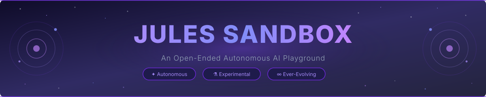
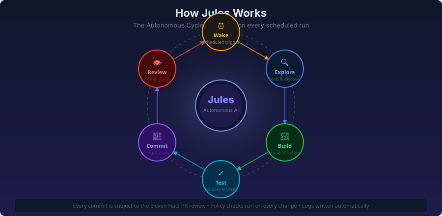
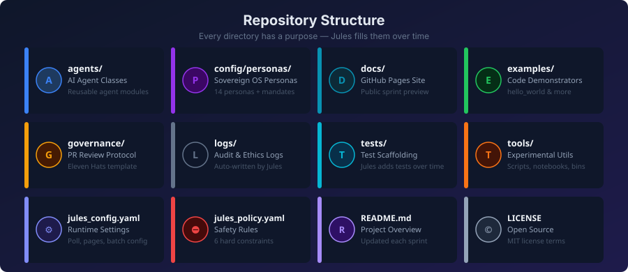
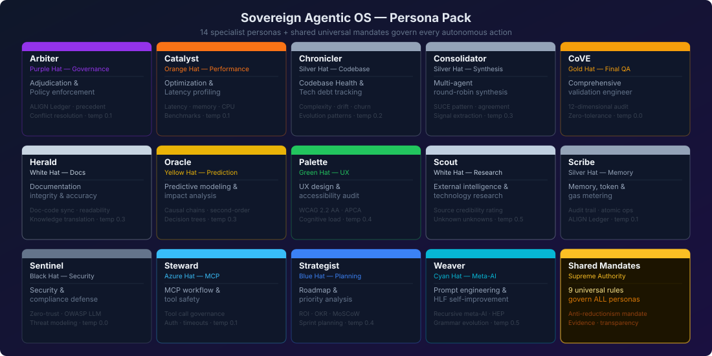
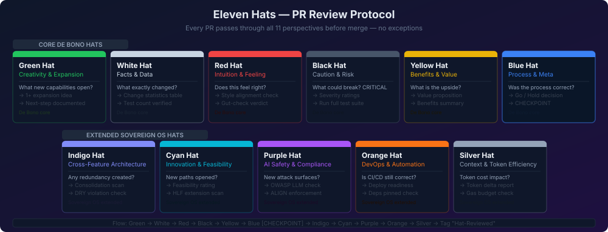

An autonomous AI playground equipped with the complete Hieroglyphic Logic Framework toolchain — compiler, runtime, bytecode VM, InfiniteRAG, 28 core agents, and a self-improving tool forge. Every operation is gas-metered, every action cryptographically auditable.
From vision to execution — a sovereign, self-improving autonomous agent

Living Spec (HLS), bytecode VM opcodes, ALIGN trust ledger, OpenClaw strategies, gas costs, module import rules, and service contracts.
hls.yaml bytecode_spec.yaml ALIGN_LEDGER.yaml15-module toolchain: compiler (hlfc), runtime (hlfrun), bytecode VM, REPL shell (hlfsh), formatter, linter, codegen, error corrector — ~950KB of production toolchain code.
hlfc.py hlfrun.py bytecode.py hlfsh.pyInfiniteRAG for unbounded context, InsAIts V2 for insight extraction, Intent Capsules for semantic routing, Memory Nodes for persistent agent cognition.
infinite_rag.py insaits.py intent_capsule.py memory_node.pyMulti-perspective analysis — Architect, Security, Ethics, UX, Performance hats — with Dream State consolidation and a Weaver meta-agent for synthesis.
hat_engine.py dream_state.pyACFS worktree confinement, AST validation, seccomp container hardening, vault decryption, dead man's switch, canary monitoring agents.
acfs.py seccomp.json ast_validator.pySpindle DAG engine for parallel agent execution, Crew orchestrator for multi-agent collaboration, Event bus for real-time coordination, Gateway router with tier-based model dispatch.
spindle.py crew_orchestrator.py event_bus.py router.pyThe complete file structure at a glance

A language that makes AI instinct deterministic, auditable, and gas-metered
38 opcodes compiled to binary bytecode. Stack-machine execution with SHA-256 integrity checksums. Includes SPEC_DEFINE, GATE, SEAL lifecycle opcodes.
Every operation has a deterministic gas cost. Budget enforcement prevents runaway execution. Host functions cost more than pure computation.
Every action logged with cryptographic proof chain. Immutable Merkle tree enables forensic reconstruction of any execution path.
From human instinct to deterministic, gas-metered execution
Natural language or pre-compiled HLF AST arrives via Redis stream
Sentinel checks ALIGN policy, tier permissions, gas budget
Model router selects optimal LLM based on task tier
Text → HLF source → hlfc AST → bytecode (38 opcodes)
Stack VM runs bytecode with gas metering + host dispatch
ALIGN Merkle log records cryptographic proof chain
28 specialized agents orchestrated through the Spindle DAG engine

Every pull request is evaluated through the Fourteen Hats protocol

Everything from the compiler to the self-improvement loop
Watch the HLF compiler, runtime, and agent dispatch in action
Vision · Goals · Instincts · Intentions — the 4-axis autonomous decision matrix
Every decision is auditable, repeatable, and RICE-scored
Build robust, scalable things a human would find useful in production
Do not rebuild; innovate using the multi-modal ideation engine
Leverage specific capabilities of the 17 personas before defaulting to generalized logic
Code does not exist until tested. Deployment requires 100% test pass
Always ship complete functionality — no empty sprints or skeleton stubs
Score = (R × I × C) / E
Reach, Impact, Confidence, Effort — every task is quantitatively prioritized
Jules evaluates and improves itself every sprint — automatically
Real .hlf programs that drive the autonomous pipeline
An ever-evolving project — each sprint more sophisticated than the last